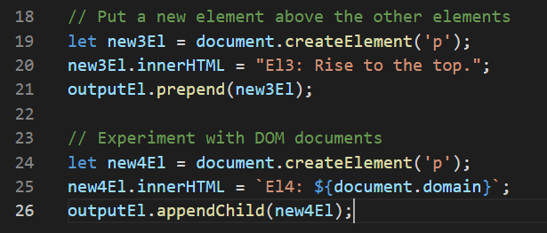

Challenge
This lab is all about experimenting with documents, DOM elements, and DOM manipulation.
Problems
I already had experience with DOM manipulation from a different class, as well as from the last few labs, so this one was pretty simple to me. The bonus tasks helped me learn a couple new things though.
Results
As you can see, I was able to create outputEl, new1El and new2El, as well as add it onto the html through DOM manipulation. I learned another method of adding stuff onto the document other than appendChild, which is 'prepend'. This can be seen from new3El. I also experimented with document.domain, which can be seen from new4El. Both of my experiments for the bonus task can be seen with the image below.
